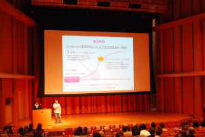

KBC Business Leverageは、起業を志す塾生の「実現可能性」を短期間で大幅に引き上げるために昨年度から始まったKBC実行委員会独自の起業支援プログラムです。 日本を、世界を次のステージへ引き上げるアントレプレナーはいかにして生まれるのでしょうか。また、そうした人々を発掘し、その真価を発揮するためにはどんなことが必要となるのでしょうか。4ヶ月間に渡ってビジネスプランではなく、そのビジネスを実行するチームに焦点を当てた支援を行うLeverageは、KBC実行委員会が7年間のビジネスコンテスト運営を経て出した、その問いに対する1つの答えです。今年度のKBC Business Leverage2.0では「Throw away your map. Embrace serendipity」を行動指標として掲げ、リーンスタートアップの手法を取り入れることで、柔軟且つスピーディーに事業を進展させていきます。
KBC Business Leverage2.0では、プログラムへ応募したチームの中から一次審査(書類審査)によって最大14チームが選出されます。その後、一ヶ月のプログラムを経て、再び選考をくぐり抜けた5つのチームがファイナルステージへと進みます。それらのチームに対して資金とコミュニティの両側面から支援が提供されます。これらの支援の全ては無償で提供され、KBC実行委員会は支援に伴う一切のリターンを求めません。
| 資金の支援 | 採択された5チームには10万円の活動支援金を提供するほか、最終報告会にて優秀なチームに対して協賛企業とKBC実行委員会より総額100万円の資金提供を行います。 |
| 機会の支援 | 1st Launch Period, 2nd Launch Periodの２段階構成となっており、プログラム期間中にはプロトタイプ作成のための勉強会やチームの進捗発表・メンタリングの場としてクローズドな報告会を設けています。 |
| つながりの支援 | 各チームに起業支援家が1名づつスーパーバイザーとしてサポートを行うほか、KBC実行委員会が8年間のビジネスコンテストを通して培ったつながりが報告会の場を中心としてチームへ提供されます。 |
| 募集期間 | 6月23日(月) ~ 8月6日(水) |
| 一次選考結果発表 | 8月8日(土) |
| 1st Launch Period | 8月10日(日) ~ 9月13日(土) |
| 二次選考会 | 9月13日(土) |
| 2nd Launch Period | 9月27日(土) ~ 12月20日(土) |
以下のリンク先よりメールアドレス等の必要情報を入力することで、応募書類をダウンロードいただけます。
応募書類のダウンロード後は解凍したフォルダ内にあるファイル「attention.pdf」に記載されております注意事項に沿って書類を記入した上で、kbc-info@keio-contest.netまでメールにてご提出ください。
応募締切は8月6日23時59分となっておりますので、余裕をもってのご提出をお勧め致します。
昨年度のKBC Business Leverageで支援を受けたチームの一部をご紹介します。
自分たちの思い描くサービスの最高の形を目指してプロトタイプのスクラップ・アンド・ビルドを繰り返したチーム、ミニマルに製品をつくって関係者へのヒアリングを重ねた結果β版のテストにまで漕ぎ着けたチーム、実際に法人登記を行って本格的に会社としてのスタートを切ったチームなど様々なストーリーがありました。応募の際の参考にご覧ください。
がん治療において避けることのできない痛みを可能な限り軽減できるようにするために、薬学部の学生とエンジニア・デザイナーが集まって疼痛緩和治療の情報を患者さんから医師にリアルタイムかつ経時的に伝えるためのアプリ「Painting」を制作し、最終報告会では最多3賞を獲得しました。他のビジネスコンテストにも並行して応募し、Leverageでは事業の具体的なビジネス化を目指して活動を行いました。
伝統産業有田焼を活用した新しいビジネスの実現を目指す「燃え燃えきゅん」は、昨年度のLeverage期間を通じてビジネスモデルの構築だけでなく、有田町へのフィールドワークや窯元との意見交換も繰り返し行ないました。彼らは現在もLeverage機関で得たつながりを糧に、有田焼産業における新しい価値提案のために日々邁進しています。
地方と首都圏では高校生が得られる進路や学びに関する情報・機会にどうしても大きな差が生まれてしまいます。Yenはそうした格差問題を解決するために、まずメンバーの地元である山口県でのワークショップの開催、冊子の出版によるキャリア支援を行うNPOです。事業の形態からゆっくりと時間をかけて実現を進めており、今でも昨年度のLeverage期間から一貫した思いを持って模索と実行を繰り返しています。